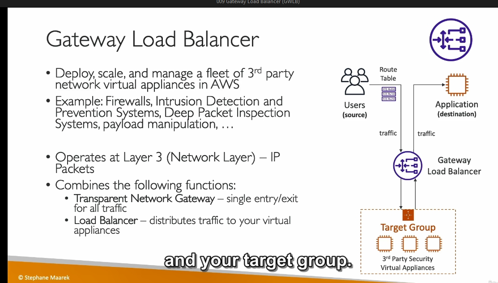

GWLB


Chi Tiết Kiến Thức: Gateway Load Balancer (GLB)
1. Khái Niệm
- Gateway Load Balancer (GLB) là một loại load balancer mới, được thiết kế để:
- Triển khai, mở rộng và quản lý các thiết bị mạng bên thứ ba (third-party network appliances).
- Hỗ trợ các dịch vụ như firewall, hệ thống phát hiện và ngăn chặn xâm nhập (IDPS), hoặc kiểm tra gói tin sâu (Deep Packet Inspection).
2. Lợi Ích và Trường Hợp Sử Dụng
- Dùng GLB khi bạn muốn:
- Tất cả lưu lượng mạng đi qua một hệ thống firewall hoặc IDPS.
- Kiểm tra, chỉnh sửa payload ở mức mạng (network level).
- Quản lý lưu lượng một cách tập trung thông qua thiết bị ảo (virtual appliances).
3. Cách Hoạt Động
- Truyền thống:
- Người dùng truy cập ứng dụng thông qua Application Load Balancer (ALB).
- Lưu lượng từ ALB đi trực tiếp đến ứng dụng.
- Với GLB:
- Lưu lượng mạng trước tiên được chuyển đến Gateway Load Balancer.
- GLB phân phối lưu lượng đến một nhóm mục tiêu (target group) gồm các virtual appliances (thiết bị ảo như EC2 instances).
- Các thiết bị ảo thực hiện phân tích, lọc hoặc xử lý dữ liệu:
- Chấp nhận: Gửi lưu lượng trở lại GLB để chuyển đến ứng dụng.
- Từ chối: Loại bỏ lưu lượng (drop traffic).
4. Kỹ Thuật Hoạt Động
- Cấp độ hoạt động:
- Hoạt động ở Layer 3 (Mạng IP), thấp hơn các load balancer khác như ALB hay NLB.
- Hai chức năng chính:
- Transparent Network Gateway:
- Tất cả lưu lượng đi qua một điểm vào/ra duy nhất (entry/exit).
- Load Balancer:
- Phân phối lưu lượng đến các virtual appliances trong target group.
5. Target Groups (Nhóm Mục Tiêu)
- Loại thiết bị:
- EC2 Instances (đăng ký bằng Instance ID).
- Private IP Addresses (cho các thiết bị trong mạng riêng hoặc trung tâm dữ liệu của bạn).
6. Protocol và Cổng
- GLB sử dụng giao thức GENEVE (port 6081).
7. Điểm Nhấn Quan Trọng
- Học GLB qua sơ đồ minh họa:
- Người dùng → GLB → Thiết bị ảo → Ứng dụng.
- Không cần đi sâu vào chi tiết thực hành, chỉ cần hiểu cách thức hoạt động cơ bản.
8. Tóm Tắt
- Gateway Load Balancer:
- Phân phối và bảo mật lưu lượng mạng.
- Đơn giản hóa quản lý các thiết bị ảo bên thứ ba.
- Hoạt động ở cấp độ Layer 3 với giao thức GENEVE.
Use Case Gateway Load Balancer (GLB)
1. Triển Khai Firewall
- Mục đích: Lọc và kiểm tra lưu lượng trước khi vào ứng dụng.
- Giải pháp: GLB chuyển lưu lượng qua firewall, chặn lưu lượng độc hại, chuyển lưu lượng hợp lệ đến ứng dụng.
- Lợi ích: Dễ mở rộng, đảm bảo an toàn mạng tập trung.
2. Phát Hiện và Ngăn Chặn Xâm Nhập (IDPS)
- Mục đích: Giám sát và ngăn chặn các mối đe dọa như DDoS.
- Giải pháp: GLB chuyển lưu lượng qua IDPS để phân tích, lọc lưu lượng độc hại.
- Lợi ích: Bảo mật chủ động, tích hợp dễ dàng.
3. Kiểm Tra Gói Tin Sâu (DPI)
- Mục đích: Phân tích nội dung gói tin để phát hiện mã độc hoặc vi phạm chính sách.
- Giải pháp: GLB phân phối lưu lượng đến thiết bị DPI để xử lý.
- Lợi ích: Phân tích sâu mà không làm gián đoạn kết nối.
4. Kiểm Soát Truy Cập Ứng Dụng
- Mục đích: Chỉ cho phép lưu lượng từ nguồn đáng tin cậy.
- Giải pháp: GLB kết hợp với ACL kiểm tra nguồn IP và header.
- Lợi ích: Tăng cường bảo mật, ngăn truy cập trái phép.
5. Chỉnh Sửa Payload
- Mục đích: Thay đổi nội dung gói tin, như mã hóa hoặc thêm thông tin.
- Giải pháp: GLB chuyển lưu lượng qua thiết bị xử lý payload để chỉnh sửa.
- Lợi ích: Tùy chỉnh lưu lượng mạng mà không thay đổi ứng dụng.
6. Bảo Mật Đa Khu Vực (Multi-Region)
- Mục đích: Bảo mật lưu lượng giữa các khu vực AWS.
- Giải pháp: GLB phân phối lưu lượng qua thiết bị bảo mật trước khi đến khu vực đích.
- Lợi ích: Bảo mật mạng xuyên khu vực.
7. Kiểm Tra Tuân Thủ Quy Định
- Mục đích: Đảm bảo lưu lượng tuân thủ quy định như GDPR, HIPAA - nói chung là quy định mọi nơi không nhất thiếu phải 2 cái này
- Giải pháp: GLB chuyển lưu lượng qua thiết bị giám sát tuân thủ.
- Lợi ích: Dễ dàng phát hiện vi phạm, đảm bảo tuân thủ.
Lợi Ích Chung
- Đơn giản hóa: Tích hợp và quản lý thiết bị mạng hiệu quả.
- Tăng cường bảo mật: Giám sát và xử lý toàn bộ lưu lượng.
- Linh hoạt: Phù hợp với nhiều trường hợp sử dụng, dễ mở rộng.